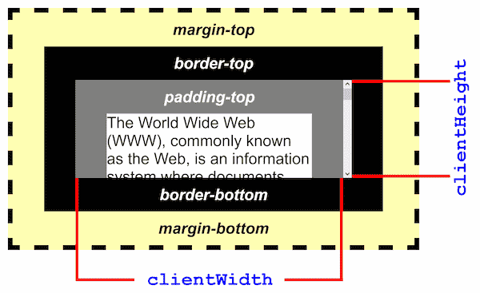

The Element.clientHeight read-only property is zero for
elements with no CSS or inline layout boxes; otherwise, it's the inner height of an
element in pixels. It includes padding but excludes borders, margins, and horizontal
scrollbars (if present).
clientHeight can be calculated as: CSS height + CSS
padding - height of horizontal scrollbar (if present).
When clientHeight is used on the root element (the
<html> element), (or on <body> if the document is
in quirks mode), the viewport's height (excluding any scrollbar) is returned. This
is a special case of clientHeight.
Note: This property will round the value to an integer. If you need a fractional value, use {{ domxref("element.getBoundingClientRect()") }}.
var intElemClientHeight = element.clientHeight;
intElemClientHeight is an integer corresponding to the
clientHeight of element in pixels. The
clientHeight property is read–only.

clientHeight is a property introduced in the Internet Explorer object
model.
{{Compat}}